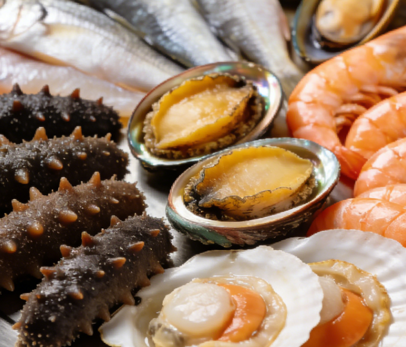
Fresh Seafood Platter
Qingdao is renowned for its abundant seafood, including sea cucumbers, abalone, scallops, prawns, and various fish. Served fresh from the Yellow Sea.
Tsingtao Beer
Brewed since 1903 using pure Laoshan spring water, Tsingtao Beer is China's most famous export beer, enjoyed worldwide.
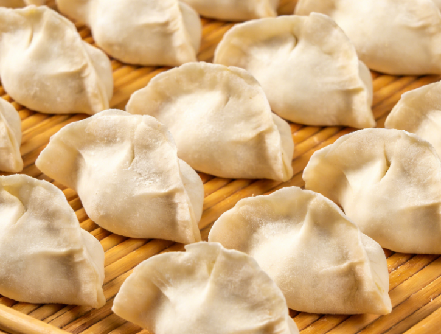
Qingdao Jiaozi
Handmade dumplings filled with fresh local ingredients, reflecting the Shandong culinary tradition of simple yet flavorful preparations.
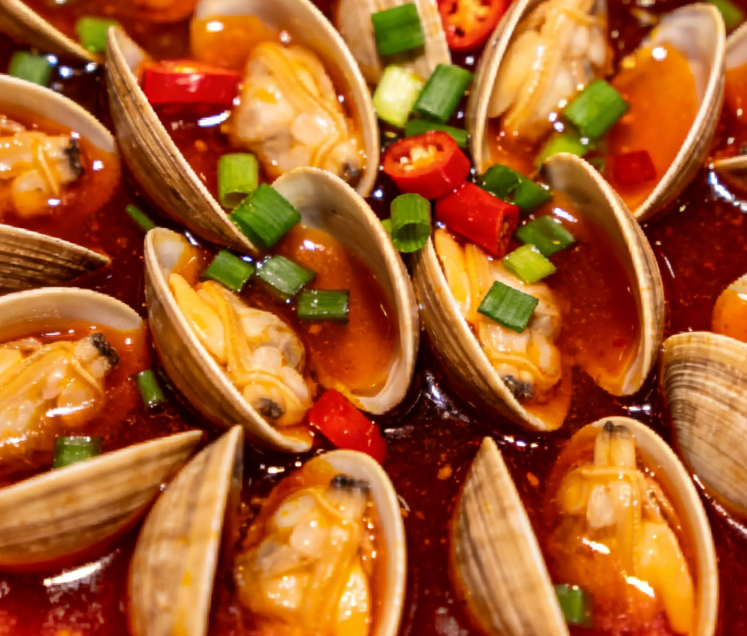
Gala (Spicy Clams)
Stir-fried clams with garlic, chili, and soy sauce. Paired with cold Tsingtao Beer on a summer evening, it captures the city's spirit.
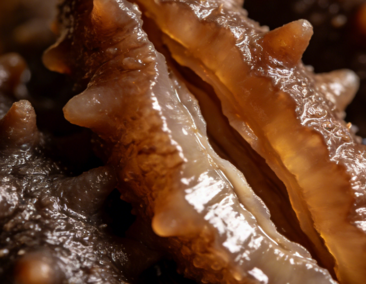
Sea Cucumber
Considered one of the "Eight Treasures of the Sea," prized for its nutritional value and delicate texture, often braised or in soups.
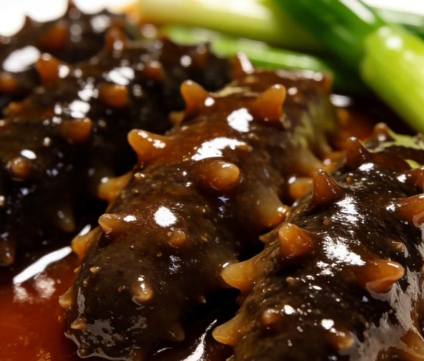
Braised Sea Cucumber
A Shandong-style classic where premium sea cucumber is slow-braised with scallions, ginger, and a rich savory sauce.
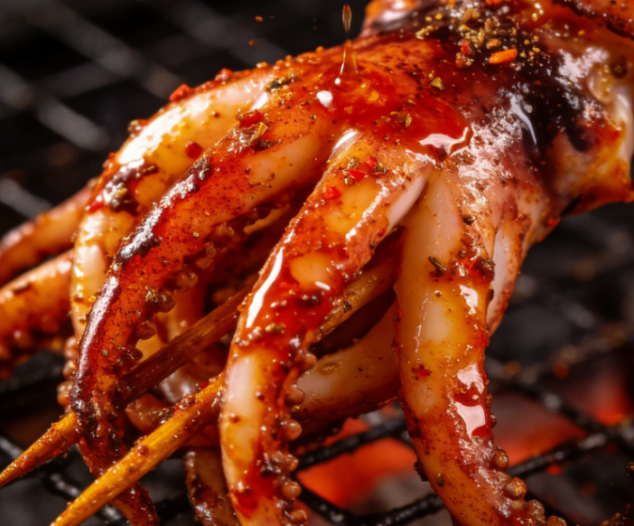
Grilled Squid
Charcoal-grilled squid brushed with cumin and chili oil is a beloved Qingdao street food staple found at every night market along the coast.
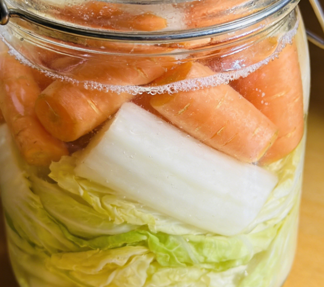
Shandong Pickles
Traditional pickled radish and cabbage with garlic and chili, a refreshing appetizer that accompanies almost every meal in local homes.
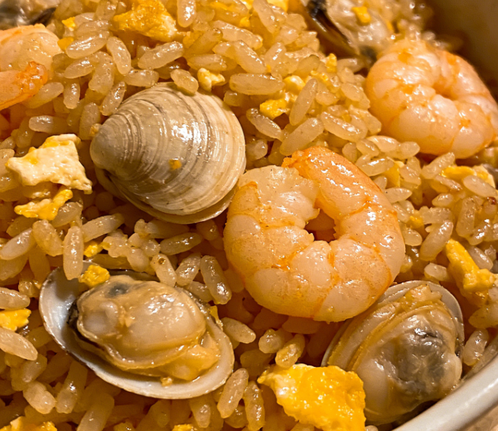
Seafood Fried Rice
Wok-fried rice tossed with fresh shrimp, scallops, and egg, seasoned with light soy sauce, representing the daily comfort food of Qingdao.
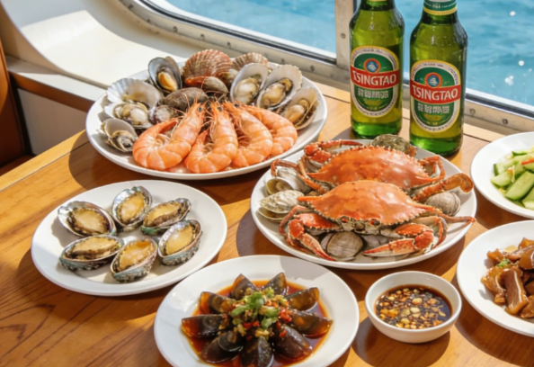
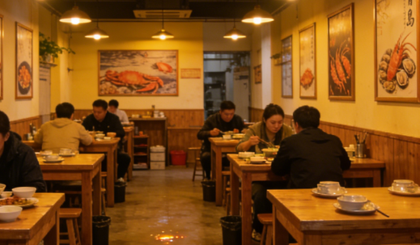
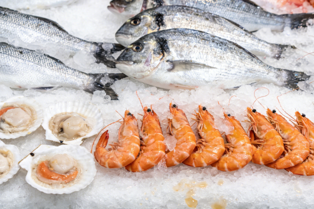
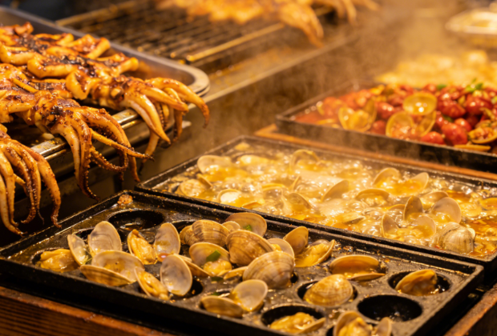
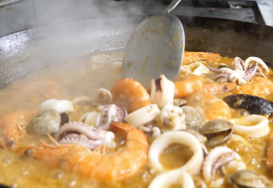
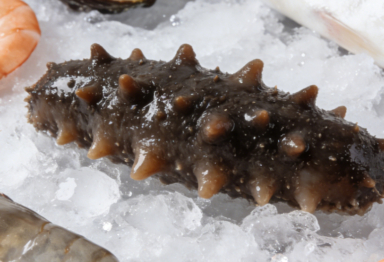
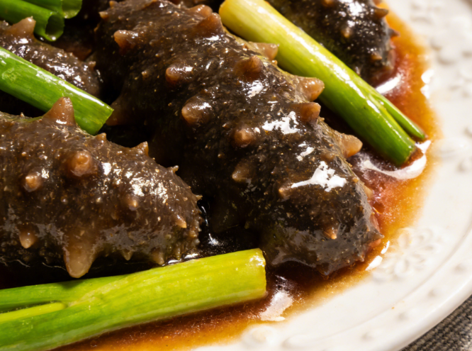
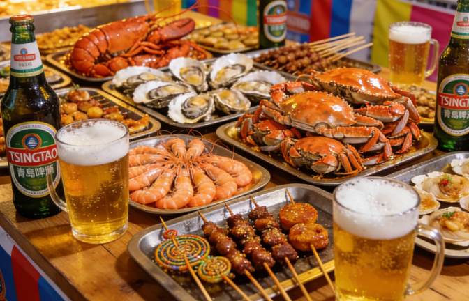